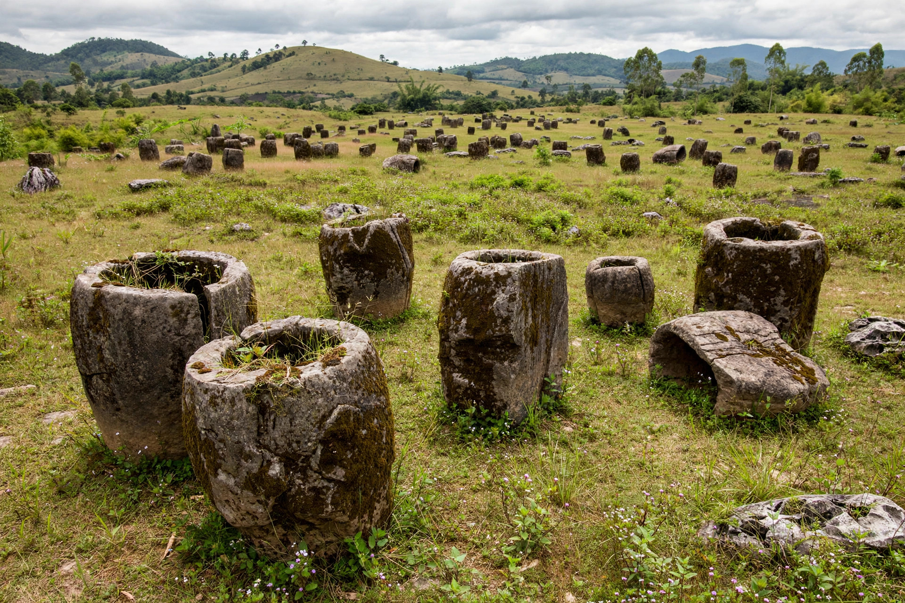

Laotian Civil War
| Laotian Civil War | |
|---|---|
| Date | 23 May 1959 – 2 December 1975 |
| Location | Laos |
| Result | Pathet Lao victory; establishment of the Lao People's Democratic Republic |
| Belligerents | Kingdom of Laos / Pathet Lao (supported by North Vietnam) / United States |
The Laotian Civil War (1959–1975) was a struggle between the communist Pathet Lao movement, backed by North Vietnam, and the Royal Lao Government, backed by the United States. It ran concurrently with the Vietnam War and is often called the "Secret War" because of the scale of the covert American bombing campaign.

1. Background
2. The Secret War
3. Bombing campaign
4. End of the war
5. Legacy
Background
Laos gained independence from France in 1953. The 1954 Geneva Accords ended the First Indochina War but left the Pathet Lao in control of two northern provinces. Coalition governments repeatedly collapsed, and by 1959 fighting had resumed.
The Secret War
From 1964 the CIA ran a clandestine war in Laos, arming and training Hmong irregulars under General Vang Pao to interdict the Ho Chi Minh Trail, the North Vietnamese supply route running through eastern Laos. The operation was kept secret from the American public and largely from Congress.
Bombing campaign
Between 1964 and 1973 the United States dropped over two million tons of ordnance on Laos — more than was dropped on Germany and Japan combined in the Second World War — making Laos the most heavily bombed country per capita in history. Unexploded ordnance continues to kill and maim Laotians today.
End of the war
After the 1973 Paris Peace Accords, American support evaporated. The Pathet Lao took power in December 1975, abolishing the monarchy and proclaiming the Lao People's Democratic Republic under Kaysone Phomvihane.
Legacy
Tens of thousands of Hmong fled to Thailand and the United States after 1975. Laos remains one of the poorest countries in Southeast Asia, and UXO clearance is an ongoing national effort.
See also: Pathet Lao · Ho Chi Minh Trail · Vietnam War